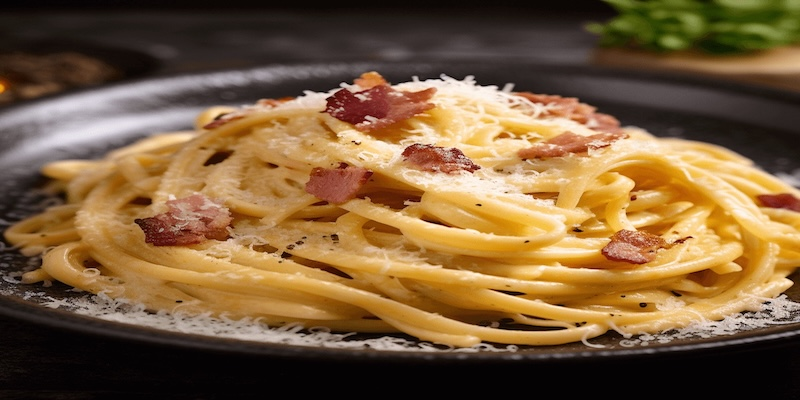

Паста Карбонара

Ингредиенты:
- 🍝 Спагетти — 400 г
- 🥓 Бекон — 200 г
- 🥚 Яйца — 4 шт.
- 🧀 Пармезан — 100 г
- 🧄 Чеснок — 2 зубчика
- 🫒 Оливковое масло — 2 ст.л.
- 🧂 Соль, перец — по вкусу
Пошаговое приготовление:
- Отварите спагетти в подсоленной воде до состояния аль-денте.
- Нарежьте бекон мелкими кусочками и обжарьте на оливковом масле с чесноком до золотистого цвета.
- В отдельной миске взбейте яйца с тёртым пармезаном, солью и перцем.
- Слейте воду с пасты, добавьте её к бекону, перемешайте.
- Снимите с огня и добавьте яичную смесь, быстро перемешивая.
- Подавайте сразу, посыпав дополнительным пармезаном.